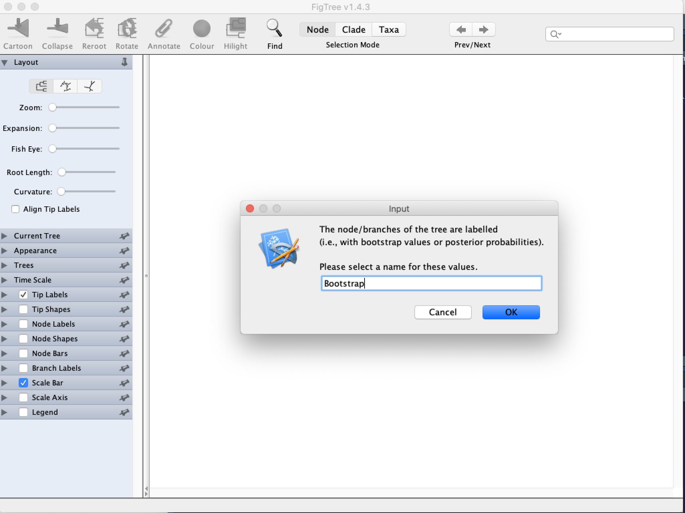

Chapter 10 Phylogenetics
One of the most common ways of creating phylogenetic trees is using protein data, as the length of the protein alignment is usually smaller than the nucleotide alignment.
10.1 Introduction to IQ-tree
In this lab, we will use one of the most recent programs to build phylogenetic trees: IQ-tree.
IQ-tree uses a maximum likelihood approach and ultra-fast bootstrapping to reconstruct phylogenetic trees.
IQ-tree is a very fast program, and it can use nucleotide, protein and other types of data to reconstruct phylogenies based on maximum likelihood.
In addition, if you remember from the theory lecture, IQ-tree also determines the best model for nucleotide/amino-acid substitution for the phylogenetic reconstruction, so pretty much IQ-tree can do it all.
10.2 Running IQ-tree on protein data
So, we are going to use the protein alignment that we created last week.
To run IQ-tree, we need a simple commands:
iqtree2 -s your_protein_alignment -B 1000This magical command to run IQ-tree and automatically determine the best model of amino-acid evolution, run 1000 ultra-fast bootstraps and obtain the most likely tree.
- Answer the following questions:
- Check the output of the program as it runs. According to the output, what is the Best-fit model for our alignment?
- What are the best models according to Akaike information criteria, corrected Akaike information criteria, and Bayesian information criteria? Are they all different?
- Use code to extract the Log-likelihood of the tree from the
.iqtreefile from the run. What is that value? How did you extracted it?
To view your final phylogenetic tree, download FigTree where the
dmgis for MacOS, thezipfor Windows, and thetgzfor Linux. Install the program.Download the
.treefilefile from the cluster to your computer. OpenFigTreeand open the downloaded.treefile.You’ll see a window like this. It asks you about what name you want to give the labels of the trees. I usually call them bootstrap:

Here’s your tree! Now, all Maximum Likelihood trees are unrooted by definition. However, its easier to study the tree if you root it. In this case, you can root it on the node with the longest branch. To do so do
Trees -> Root tree -> Midpoint.You can also organize the tree for easy viewing by organizing it by early-emerging to late emerging. Use
Trees -> Order nodes -> Increasingto do so.Finally, observe the bootstrap values by selecting
Node Labels -> Bootstrap. Good boostrap support values are greater than 60%, highly supported values are greater than 75%.Answer the following question:
- Summarize your findings (i.e.: Describe the relationships between the species; which nodes are well supported, which nodes are not; does this tree fit the expectation based on the taxonomy of the species used?)
10.3 Running IQ-tree on nucelotide data
Now, lets do the same but using the homologene_nucl.fasta file you’ll find in the moodle page.
This file has been previously aligned using MAFFT, so this SHOULD BE the same file you got from the mRNA homologene file, and we will test this hypothesis.
- Align YOUR mRNA homologene file you obtained last week using
MAFFT. Answer the following question.
- Add the code for the MAFFT alignment of your mRNA file.
- Why did you decide to use that algorithm?
- Run
IQ-treefor each of the mRNA alignments. Fill the following table
| mRNA file | Best nucleotide model | Likelihood score of tree | ||
|---|---|---|---|---|
| Your mRNA file | ||||
| Professor’s mRNA file |
- Open both trees in FigTree. Answer the following question:
- What is the most striking difference you see?
- Open the professor’s alignment in the MSA viewer of NCBI. After uploading the sequence, use the
Coloring -> Nucleic Acid Colorsoption. Answer the following question:
- There is one sequence that looks very weird (i.e. Colors don’t match and there are long strands of insertions and deletions in the region). What sequence do you suspect its weird?
- The professor just noticed that he changed the sequence of Mus musculus (
gi|118130707|ref|NM_008628.2|) and added the reverse strand instead of the forward strand… WHOOPS.
In this case, MAFFT can check all the sequences and correct the direction of the strand. Use the --adjustdirectionaccurately option of MAFFT to run it.
So, if you used the E-INS-i algorithm, the syntax would be like this:
mafft --adjustdirectionaccurately --genafpair --maxiterate 1000 homologene_nucl.fasta > professor_corrected.fasta
Using this info, here’s the homework: